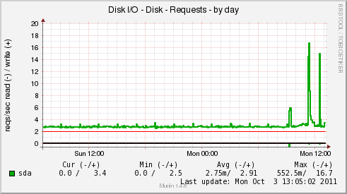
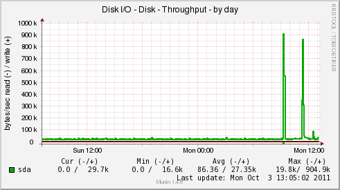
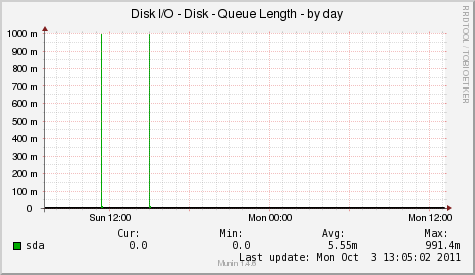
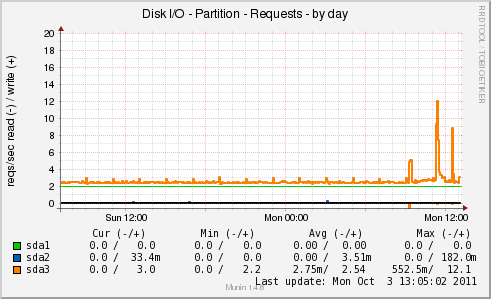
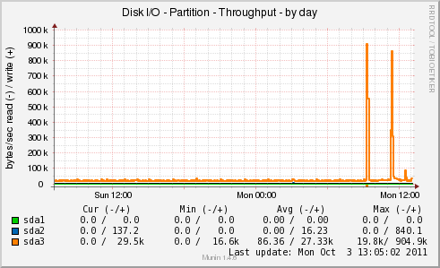
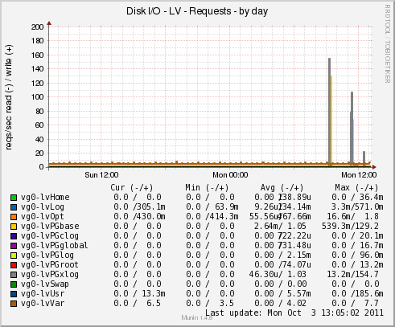
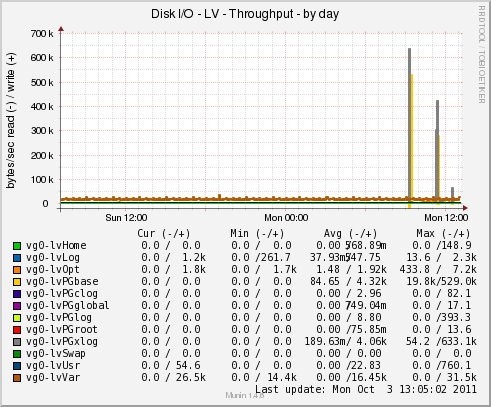

PyMunin
Disk I/O Plugin
PyMunin Multigraph Munin Plugin for Monitoring Disk I/O Stats.
Disk I/O Plugin - diskiostats
The multigraph plugin implements the following graphs:
- diskio_disk_requests
- diskio_disk_bytes
- diskio_disk_active
- diskio_part_requests
- diskio_part_bytes
- diskio_part_active
- diskio_md_requests
- diskio_md_bytes
- diskio_md_active
- diskio_lv_requests
- diskio_lv_bytes
- diskio_lv_active
- diskio_fs_requests
- diskio_fs_bytes
- diskio_fs_active
- diskio_fs_requests
- diskio_fs_bytes
- diskio_fs_active
Sample Graphs
|  |
 |
|  |
|  |
 |
|  |
 |
Environment Variables
| Variable |
Description |
| include_graphs |
Comma separated list of enabled graphs.
(All graphs enabled by default.)
|
| exclude_graphs |
Comma separated list of disabled graphs. |